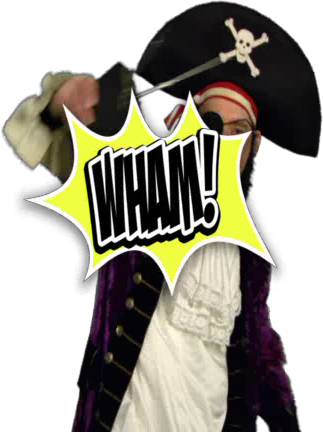
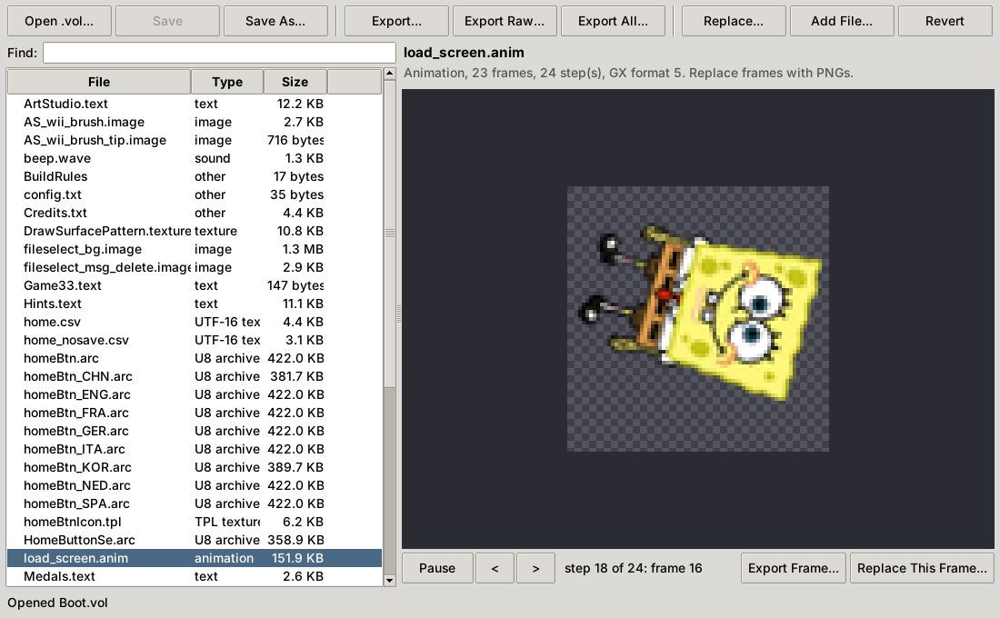
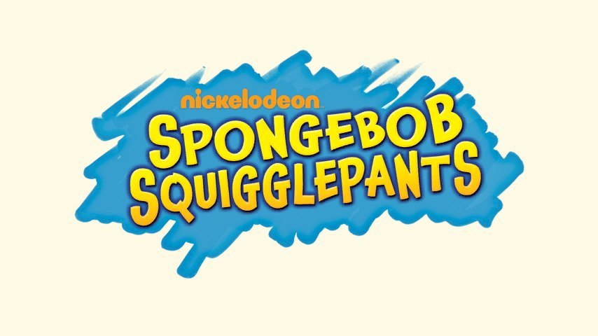
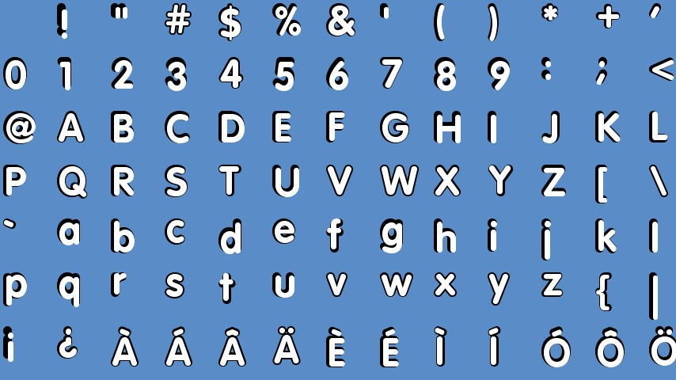
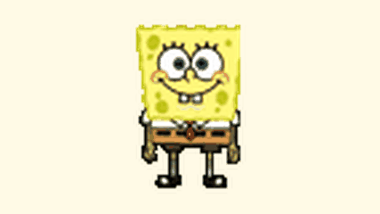
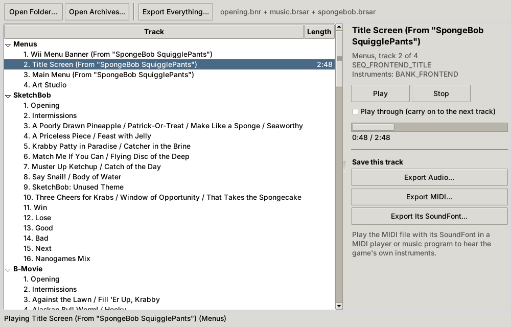

Want to see how the game's made, or make it yer own? Here be the tools for diggin' through its treasure chest of files!
VolKit
Almost everything in SpongeBob SquigglePants is packed into .vol archives: the pictures, animations, text, fonts and sounds. VolKit opens them up, lets you change what's inside, and puts it all back so the game can use it.

- The VolKit window: browse an archive, see the pictures, play the animations and sounds, edit the text in all six languages, swap in your own files and save.
- VolExtractor: unpacks whole archives into files you can open.
- VolPacker: packs your edited files back into a working archive.



| In the game | What you get | Back into the game? |
|---|---|---|
.image, .texture | PNG, with transparency | Yes, from a PNG of any size |
.anim | A PNG for each frame, and an animated GIF | Yes, frame by frame |
.text | A spreadsheet (CSV) with a column for each language | Yes, or edit it in VolKit |
.wave | WAV | Yes, from any WAV |
.font | A PNG sheet of every letter | Not yet |
.arc, .tpl | Unpacked, or a PNG | Not yet |
Every file can also be saved, or replaced, exactly as it's stored. Files you don't touch keep their exact bytes.
.vol archives: Batman: The Brave and the Bold - The Videogame on the Wii doesn't, for one.How to Use VolKit
- Get Python.Install Python 3 (on Windows, tick Add python.exe to PATH). VolKit installs the one extra package it needs the first time.
- Copy the game's archives.In Dolphin, right-click the game, choose Properties, then Filesystem, and extract the
.volfiles. Keep a copy of the originals. - Open one.Double-click
VolKit.bat(Windows) or runvolkit.sh(Mac or Linux), and open a.vol. Pick a file to see it; double-click a line of text to change it; use Replace to swap in a PNG, CSV or WAV. - Save, and play.Save the archive, then try it in Dolphin, or load it with Riivolution. VolKit's README shows how.
Rather work on lots of files at once? extract_all unpacks every archive into folders, and after you've edited the files, pack_all packs them back up.
SoundKit
The music of SpongeBob SquigglePants isn't recorded audio: the Wii plays it from note data and instrument samples, the way a MIDI file is played. SoundKit plays it the same way, from the game's own sound archives, so you can listen to it all and save it as an album.

- The jukebox: the soundtrack world by world, with each nanogame theme named after the nanogames that play it. Double-click to listen.
- The album: SpongeBob SquigglePants (Original Soundtrack) by Jake Kaufman, tagged and numbered, as WAV, FLAC, OGG or MP3, to listen to or to loop seamlessly.
- MIDI and SoundFonts: every track as a MIDI file, and the game's instruments as SoundFonts, to play them with the game's own sound or rearrange them.